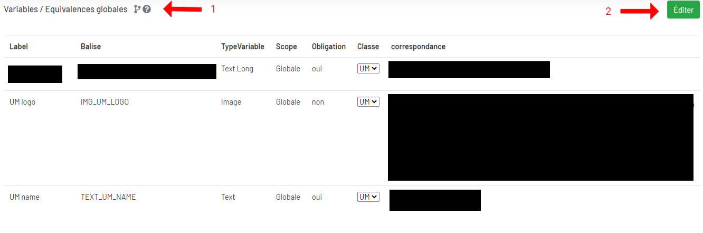

Equivalences Globales
Il existe des tables d’équivalences entre les balises et leurs valeurs. Ces tables sont présentées sous forme de formulaires à compléter comportant les variables. Il existe 2 formulaires :
- Un pour les variables globales,
- Un pour les variables locales par psmf
1. Table d’équivalences globales

1L'historique des modifications des équivalences globales et l'aide utilisateur. = l'historique des modifications des équivalences globales
= l'historique des modifications des équivalences globales = l'aide utilisateur
= l'aide utilisateur
2Vous pouvez modifier les équivalences globales.